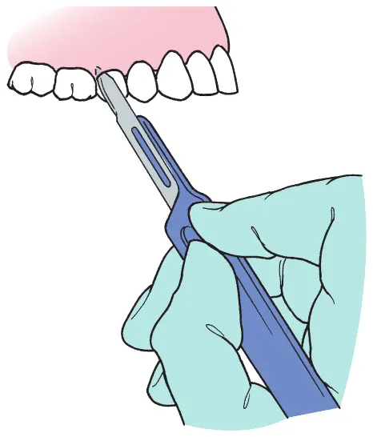
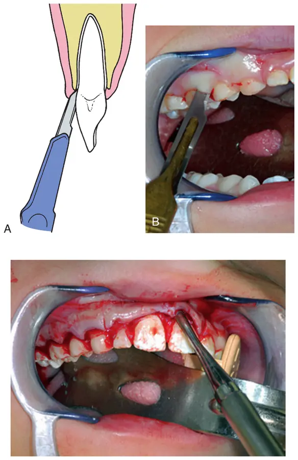

نسخه استخراجشده؛ ترجمه یا تأیید علمی انجام نشده است. وضعیت: captured

برش. تیغهی ۱۵ روی دستهی ۳، با گریپ قلمی. تیغه با زاویهی خفیف نسبت به دندان نگه داشته میشود و برش از خلف به قدام در سالکوس زده میشود، با کشیدن چاقو به سمت خود جراح. یک ضربهی پیوسته و نرم، و در تمام طول برش تیغه در تماس با استخوان بماند.

تیغه روی استخوان سریع کند میشود. اگر قرار است بیش از یک فلپ رفلکت شود، به تعویض تیغه بین برشها فکر کن.
برش رهاساز عمودی با دست مقابل که مخاط آلوئولار را تحت کشش نگه میدارد زده میشود تا برش تمیز از میان آن بگذرد. اگر مخاط آلوئولار کشیده نشود، چاقو تمیز نمیبرد و برش دندانهدار درمیآید.
رفلکشن از پاپیلا شروع میشود. سر تیز الواتور پریوستئال شمارهی ۹ زیر پاپیلا در ناحیهی برش میلغزد و به کنار چرخانده میشود تا پاپیلا را از استخوان زیرین جدا کند. همین کار در تمام طول برش لثهای تکرار میشود.
یک نشانهی تشخیصی که جلوی هدر رفتن وقت را میگیرد: اگر بلند کردن بافت در نقطهای سخت بود، احتمالاً برش در آنجا کامل نشده و باید همانجا دوباره برش زده شود — نه اینکه زور بزنی.
پس از رفلکت شدن کل لبهی آزاد با سر تیز، سر پهن فلپ را تا حد لازم بلند میکند، با مراقبت از اینکه لبهی الواتور روی استخوان و زیر پریوست بماند. در فلپ سهگوش، پس از شروع رفلکشن، سر پهن در گوشهی میانی فلپ گذاشته میشود و دیسکسیون با ضربهی هُلدادنی به سمت خلف و آپیکالی پیش میرود — همین رفلکشن را سریع و آتروماتیک میکند.
رترکشن. خود الواتور پریوستئال میتواند رترکتور شود: عمود بر استخوان نگه داشته میشود، روی استخوان سالم مینشیند، و بافت نرم بین رترکتور و استخوان گیر نمیافتد. آنوقت فلپ بدون کشش نگه داشته میشود. برای دسترسی وسیعتر، Seldin یا Minnesota یا Austin به همین شکل به کار میروند.
رترکتور نباید به بافت نرم فشار داده شود تا بافت را از میدان بیرون بکشد. بهجایش رترکتور با فشار محکم روی استخوان در جایش میماند. با این روش، تمرکز جراح روی میدان جراحی است نه روی رترکتور، و احتمال پاره کردن ناخواستهی فلپ کمتر میشود.